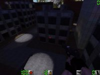

Map name: Downtown Madness
Map author: Gerbil!
Map filename: urban2.zip
Reviewed by: Bishop, Susano-[MacH], kEvLaRdEwD, Zynchromesh, xorfl, SliM, Crodge,
SabbaTh, ��hun�, Nechrom, UNholy, Pirate-X, pLaGuE666, Omega Dopeshow
Review
Architecture Rating: 8/10
Architecture Comments:
The placing of the rooms/windows in this large dm level was well thought out and executed almost with pefection. There are a few spaces that you can hold up in one building and take out just about everybody, but not near as many as in the first urban.
Looks Rating: 6/10
Looks Comments:
The buildings were too bleak, the textures were dull on the big buildings, but just right for the small ones. Sky could've had alittle more detail.
Gameplay Rating: 7/10
Gameplay Comments:
Perfect for gaming with 5-6 gamers, but boring as hell with just a handful. Stage can often become a little too big, with weapons being too far apart. More than once I found myself running + bandaging myself just looking for a damned pistol.
Ambiance Rating: 5/10
Ambiance Comments:
Dark, eery streets gave me the feeling I was in a gang in NY, other than that I felt like I was just playing a game.
Other Comments:
Conclusion:
Nice level, needs better distribution, especially on zone.com.
Overall Rating: 7
Reviewed By: Omega Dopeshow
Review
Architecture Rating: 9/10
Architecture Comments:
Great map. good job Gerbil!
the fact that you can get almost to anywhere on this map
makes it so much more fun than most others, i also like the fact
that you put the 3 different kinds of engagement zones (indoors, ground level, and rooftops) WTG.
Looks Rating: 9/10
Looks Comments:
A little dark, but the textures fit with the darkness aura very well
There are some areas that are almost impossible to see in. but i suppose that is a blessing for snipers.
Gameplay Rating: 10/10
Gameplay Comments:
All i can say is, i frag twice as much as i do on any other map when im playin urban2.
Ambiance Rating: 7/10
Ambiance Comments:
Sorry to say, but the ambiance is mediocre. but in truth thats not what really matters. The areas of engagement are incredible, and i usually am not looking at the ambiance of a map when im blowing off peoples heads.
Other Comments:
Conclusion:
Urban2 is an excellent map, for ANY weapon. This is probably THE GREATEST map i have ever played on, because of this. The only map that nears it in being able to use all weapons is Cliff2.
Overall Rating: 9
Reviewed By: pLaGuE666
Review:
Like all good action films, the sniperfest otherwise known as Urban has
a sequel. However, your average sequel tends to fall into the disastrous trap
of doing the same thing all over again; no sophomore slump for this series.
As if scratch-built all over again, Urban2 is a completely new kind of sniperfest,
what with almost every single building having convenient windows (along with
matching stairs and ladders to reach them - a feature sorely needed in the original
Urban). It gets even worse with the dark blue "closing time" shading, giving
off a feel of dusk; essentially, snipers can even camp on the ground, and, chances
are, you might just pass one right by. But never fear, handcannon users, Urban2
isn't the rushing-into-the-open fight that Urban was. The heights of the buildings
have been adjusted, so if you screw up a building jump, it's probably not fatal;
one is reminded of the infamous leap of faith from the Coke sign.... or why
worry about leaps of faith anyways? The buildings are set evenly apart, though
not in such a structured manner as to ruin the overall feel of the map. Plus,
the beauty of the map, is the overall accessability of every single area...
stealth is still very very possible in the map (gl_modulate stimmers aside)
and it's much much easier to flank sniper nests with all the new paths you can
take. To sum it up, Urban2's still a sniperfest, but a different KIND of sniperfest...
one that would most definately bring about more diverse and interesting matches
than it's predecessor.... .. pred... .... damn, did I spell that right? ^^;;;;
Oh well... :D
~Susano-[MacH]
Review:
Have you ever played Urban and realized you were the last one left on your
team, so you went into that room off of the bridge and just waited for someone
to open the door? Well then congradulations buddy, Urban 2 is for you! The very
first thing you will notice is just how absolutely pitch black dark this board
is. Tell me honestly Gerbil!, were you trying to eliminate sniping completly
or just didn't want to worry about illegal textures anymore so you obscured
it all? Of course, even if you could see, all the buildings are about the same
height, so you are limited to a view of the street in front of you. I think
this board brings into question a much broader problem: Is it really possible
to make a board that can be equally enjoyed in DM as in teamplay? Should maps
just be concentrated on one or the other? How many reviews have you seen where
people complain about weapon placement on boards that are obviously meant for
teamplay? Urban 2 is quite definately a Deathmatch only board, if not a ninja
only board. When I tried playing TP, I lost my partner before Action!. Personally,
I play Action Quake because of the teamplay option, because that's what really
sets it apart from normal quake. And as far as playing Deathmatch on a board
like Urban 2, let's just say I gave up playing "Hide and go seek" when I was
9.
-kEvLaRdEwD
Review:
Well, I'm going to make my review short on this one - since there isn't
much new. Urban2 is what I call an "ordinary sequal". It's almost the same map
as Urban and with minor changes. If you loved Urban, but was tired of those
damn snipers - you're gonna hate this one. Urban2 is very dark, with the same
perfect sniper spots as in Urban. This means, if you haven't guessed it, that
a skilled sniper with a silencer(my favourite :-) will kick ass on this one.
That doesn't mean that this map isn't good. It is well done, and it is clear
that it isn't a rookies project, but made by a pro. Textures are ok, but nothing
special. The thing that this map scores points on, is architecture. This map
is based on a really complex city, like seen in Urban and Chriscity3. And luckely
it is also without those locked doors like in Actcity2. This map is good, but
personally I find the original better(don't we always). Well, don't take me
wrong - here are the scores
: -------------------| SCORES |------------------
TEXTURES: 4/10
FRAMRATE: 7/10
ARCHITECTURE: 10/10
DEATHMATCH: 5/10
TEAMPLAY: 6/10
TOTAL: 6/10
-Zynchromesh
Review:
I have to say, I've been playin action for quite some time now...seen good
maps come, bad maps come....the classic, the 'play-em-once-then-throw-em-away'..seen
em all. But urban2 is by far the WORST map I've ever played. I thought the first
one was horrible, I just knew I had to put up with it, cause the majority of
the people seemed to enjoy it (i sure love those 20 minute rounds too, yippee
wowee). But to make a sequel to it, AUGH AUGH AUGH!! I have no CLUE what was
going on in the author's mind, but he was either high when he decided to make
a second urban, or he's really really dumb... While i was playing, I noticed
that if the teams were lucky enough to be placed close together, one team would
be annihilated quickly, or a few people would escape (they of course, went off
to camp leading to the 20 minute rounds). However, if the teams started fairly
far off, you'd be lucky to hear any fighting every 5 minutes. Fire a few rounds,
watch him run away, track him down 5 minutes later fire a few more rounds; repeat
for 2 hours. Well, I dunno how the mind of a camper works, so maybe there's
just lots of em out there, and they really like the map. I think it sucks, and
it'll be hard for a map to suck quite as much. Then of course, in deathmatch,
the majority of people would go off and find a cozy little corner somewhere,
while 2 or 3 people rushed around looking for them hoping to be able to save
the dignity of AQ2, they failed. This map is a disgrace, and should be deleted
immediately.
-xorfl
Review:
Well, this is my first review of a map. Having said that, on with the review.
Urban2 is a fairly good map, at leadt technically(Top scores all around there.)
The problem is with the flow and gameplay, and weapon balance, and some other
stuff. Flow: This map does not flow. In fact, it lacks flow even more than it's
predecessor, urban 1, had. all fights basically occur in one spot of the map,
just like urban1(and actcity2, and teamjungle, and armyterr,and pretty much
every other so called "teamplay" map that's been released lately.) Weapon balance:
Well, the map isn't the total sniperfest that urban1 was, at least not in the
sense that it was across the level sniping. The sniping spots are just as imposible
to get to without getting shot though, and if someone is ladder camping then
you might as well forget it. As for the other weapons, it's pretty bleak.. Except
in a few confied areas, the automatics and sniper rifle rule this map. The shotgun
can take you a little ways, but you'll usually get head shot or sniped before
you can use it due to the way the map is laid out(mostly straight, narrow avenues
--in other words m4 country.) If you want to use stealth and tactics, this is
NOT your map. Layout: The layout of the map is dismal. Not in an asthetic sense,
I mean in a gameplay sense. As noted before, the map is ridiculously open(like
urban1) and lacks even basic cover, again like urban1. Unfortunatly, this map
lacks the wide open dodging room that urban1 had, instead the author has opted
for narrow alleyways for the most part. The open areas are almost always overlooked
by a sniping spot or two, making crossing them a risky at best and sucicidal
at worst situation. Which brings me to my worst quibble with this map: The sniping
spots and upper areas in general. Each upper area is accesible only by a roof.
To reach these roofs, you usually have to climb a ladder IN PLAIN sight of most
of the sniping roosts. Also these roosts usally only have 1 easily watchable
entrance, normally a ladder.... What's worse is that a sniper or auto-sniper
will find it quite easy to set up camp and watch the ladder without risk to
himself in many sections of the level. Just like Urban1, fancy that... Other:
The textures used in this level look fairly good. Some of them are inappropriate,
like the odd looking grate/window texture found on several of the buildings.
Weapon and ammo placement are fairly good, although i found the sniper rifle
and mp5 a bit too easy to reach. Verdict: This is the same thing as urban only
with more of the crap that made the first one so blasted annoying to play, and
not alot of the few things that made the first worth the time. Great DM map,
as you will only have 3 losers AT MAX actting like dumbasses. For teamplay,
I advise you as follows: AVOID THIS MAP LIKE THE PLAUGE. That is, unless YOU
like getting constantly sniped and headshot by guys camping in essentially inaccesible
sniper roosts....
-SliM
Review:
Ahhhh Urban2 a really good map unfortunatly didnt live up to some of my
expectations. The map was way to dark making the sniper play on the sequel much
harder then the first also there were way to many rooms but on the good side
it wasnt that big of a map so it doesn't take so long to find the guy wating
and praying for the time limit to hurry.But those are just comments for the
teamplay on the other hand this will be one of the better ffa (free for all)
maps around. Basically the map consisted of mostly 3 storie block buildings
with roof accses and many windows to fire out of,a few lite up with light making
you and excelent target if you peered your res dog head out of them. Personaly
i feel gerbil tried to hard to put everyones suggestions into urban2 althoug
it turned out great it didnt live up to my expectations he should have gone
with his gut it worked the first time.But i also no many people who love this
map so try it out for yourself and see what you think.
--MCP-
Review:
Well, I went into this map as a skeptic, as all reviwers should, mainly
because I didn't like Urban. I thought, another city map, another sniper war,
but this map is anything but that. Gerbil! finally made it so a lot of the buildings
actually have insides to them, which is always a plus for me, kind of a way
to duck out of sniper fire and such. This map is fun to play, and go download
it now! Structure and Design -8/10- I really really like it when maps have some
sort of balance to it. I saw people being sucessful with all kinds of weapon
combos, from shotgun/slippers to sniper/kevlar to mp5/silencer. I love being
able to have buildings to hide in, so you aren't always out in the wide open.
I just think it's funner to shoot people out of windows, then off of roofs all
the time, insides to buildings add another dimension to the level. I think Gerbil!
delivered, and saw that maybe some people didn't like a wide open map and decided
to give the best of two worlds. I love how he did his staircases too, you can
sit behind them, and as people run up the stairs you can shoot at them. It actually
is quite fun with a shotgun, and you should try it. This map favors all kinds
of strategies to it, from Rambos out there, to Campers out there. This suits
everyone's playing needs. Lighting -8/10- The only ding is for a tad too much
darkness, but hey it's night, so that's forgiveable. I don't have none of that
new-fangled 3-d accelerator, so I can't tell you how the colors of light came
out at me, but I like the lighting. It had dark areas, and really light areas,
and some inbetween, it was jsut really cool. It reminded me of a city street
at night when I played it, dark alleys and such. The lighting is believable,
and real is this map, not like other maps where light comes out of nowhere,
and doesn't give shadows or anything. The lighting overall adds to the map,
and doesn't detract from the map at all, which is what it is susposed to do
right? Teamplay -8/10- Teamplay was a blast on this map, I almost always play
teamplay, and I greatly favor those maps, which don't have two set bases. This
map, has so many defensive points in it, and ways to get to someone's back,
it requires teams to protect their snipers. Which is always a good feature,
to implement in your map. It was fun to play, and that's what matters. Textures
-5/10- Didn't like them, they really didn't impress me, like blockwar's or teacher'
textures, but the map is a good map anyways. Not so great textures, don't make
the map a bad map unless, they are a total eye-sore and don't add to the realism
of the map. Ugly textures are fine, if they are for the paint on the walls at
a school, but if they are ugly for no reason then it sucks. These maps textures
aren't the best in the business, but they work okay and don't hurt my eyes when
I see them, so this map is still a great map. Textures aren't that important
to gameplay, unless they favor a certain team, by camoflauge or something to
that effect. Overall -8/10- My only grievance is the textures, but I didn't
let that factor have anything to do with the over all grade. This map is lots
of fun, and anyone would enjoy playing it, because it gives adavantages, and
disadvantages to all weapons and items. 'Till next time
-Crodge
Review:
I really liked the first version of Urban, although it had it's flaws (Ladders
that couldn't be descended for example), so when I heard of the new Urban2,
I was thrilled. I downloaded it and I tried it out for myself (I haven't tried
it on the Internet yet). The ladders were kind aimproved, but some of the really
look psyched, and one of the ladders can't be accessed properly. The change
of design is quite an improvement otherwise, and it defeninitely looks better
than the first Urban, and it is no longer the team which controls the highest
roof that wins, but the textures definitely need some work. I get confused and
bored by seeing the same texture on all buildings. Another thing that really
pisses me off is that when you jump down from one roof to another, it is usually
impossible to get back, since the difference in height between the two roofs
is just enough. Weapons and ammo placement: The placement of the weapons is
quite good, with the sniper rifle in the middle, and in a rather open area so
that it will be hard to lay your hands on it. The shotguns play a too small
role on the map according to me, since there is simply not enough ammo for them,
as opposite to the other weaponry, and especially the sniper rifle. Teamplay:
I haven't tried teamply yet, but I think it will be quite nice, since it is
not as open for a sniper as Urban, and also the darkness provides some cover.
-SabbaTh
Review:
Now first off, I would like to say that I am a huge fan of the original
urban. While some may say things along the lines of "Urban sucks my ass!!",
I was always in favor of the classic sniperwar level. When I saw urban2.zip
up for grabs at www.mapdepot.net, I grabbed it right away, thinking that a lot
of servers would be playing it, considering the original was quite popular.
Boy was I wrong. It was almost a week and half after I had downloaded urban2
that I actually got to play it on a server. now urban2 is not a bad map by any
means, but it is not the best map I have ever played, either. It lacks the "feel"
that urban has. In urban, you could sit on a roof and just snipe away, with
only a slight chance of some fool climbing up the ladder hoping for a lucky
shot.In urban2, however, when sitting on top of a building, there are so many
places where people can nail you from, it can be very frustrating. I understand
that this is good for the offensive players who dash on top of buildings with
their MP5's, and it also discourages camping, but I liked the feel of the old
urban better. I have only played this map in Teamplay, so I do not know what
weapons placement is like. Also, this map is very dark in some spots (especially
corners). While the many spots to kill from discourage camping, these spots
encourage it. Despite these flaws, urban2 is a well done map, and maybe I should
try something new for a while, such as the MP5, and give up my trusty old SGR3000
Sniper Rifle. I think that this map was intentionally made to be more fair to
those with the automatic weapons. Great job, Gerbil!, just make sure you lighten
up those corners and not make the map so open. I hope that urban3 is great (which
it probably will be), and keep up the great work.
-��hun�
Review:
This map rules. And it is very sniper friendly (I like snipeing) :) . I'm
gona do this review in that Structure and Design - then - Weapon placement -
then - ... and so on, style. I will keep my personal comments till last. Structure
and Design: Very natural looking and a good city indeed. I like that it's dark
(its easy to snipe) :) Weapon placement: Very good placement! I got my sniperrifle
just where I want it :). BUT I have heard complaints from both my opponents
and teammates about ammo for the M4. Sometimes it just lies there and somebody
picks it up just to see that its empty. Gameplay: That is very good to. I like
that the ladders are placed, not against the wall (like in Urban). And there
is this room... I will talk more about that when I'm finished. Framerates: Isn't
any problem here. By the way, I own a PII 400 and a Voodoo2 card :) . The looks:
Like I said in struct. & design. It is VERY similar to a real city with officebuildings
and stuff. Comments: Now back to that room I was talking about. When I played
teams with my friends on the LAN, we always got stuck and blew each other up
i a certain room with three windows and 2 stairs leading up to it. First our
team held it for a while and then the other team came and cleand the room out,
then we came backe and retook it and so it continued... until one smarthead
began throwing grenades and you can imagine the massacre. On that day I became
very good at knives and gained many frags by throwing those knives in their
faces, and I also found a great snipeing point from where you could se that
anoying room, it was there I got my bonuspoints "Nechrom recieved 11 frags for
his 9th kill in a row" :) . Overall score: +8/10, it looses one point on that
stupid room everybody was fighting about. I realy liked this map (for snipeing)
:) .
-Nechrom
Review:
I would like to comment that Urban2 was a great disappointment. After the
hours of fun in teamplay on the Urban map by Gerbil!, I was anxious awaiting
his next release. Well.. I got it.. Urban2.. And unfortunately this one is unable
to live up to the original. There is simply too many places someone can camp
and with the floods of new people coming into the Action realm, this is not
a good thing. Im hoping there will be an Urban3 which will surpass the first
two in the fun factor, but until then, my vote is on the original Urban.
-UNholy
Review:
Looks like a great level plays like crap.
Seriously I thought i'd love this map, I heard it was dark and i like dark levels.
Unless you use shotgun and automatics your totaly screwed on this map, it's
automatic city. People say it's good that the rooftops are accesible from most
anywhere, they are dead wrong it sucks so bad. I play a sniper most of the time,
I go on the rooftops and they run up on my ass i can't do shit to them. Played
a match and got 1 kill the whole match caus they kept spawning close and killing
me and I had no where to run. Accessibility and the fact that the buildings
look to similar make this map suck so so so bad. One, no it doesn't even the
game because of the sniper so everyone can get at them. It does however make
it impossible to snipe because they can run up on you. One thing in the whole
game I DO NOT rely on is my team, hell they all go and get theirselves killed
in a fury of fire five seconds into the round so I'm not gonna be looking for
them to defend me, so it doesn't make it more of a team match in teamplay and
in Deathmatch im sure its at least decent to run around on unless you need to
get somewhere specific. In any case im givin this map a 4/10 caus it could be
decent at dm but i dun play dm so Im giving it the benefit of the doubt, other
wise it'd be a 2 or 3. Hopefully i can learn to live with this map sometime,
or at least not bring myself to obliterate the map in less than a week off my
hard drive.
-Pirate-X